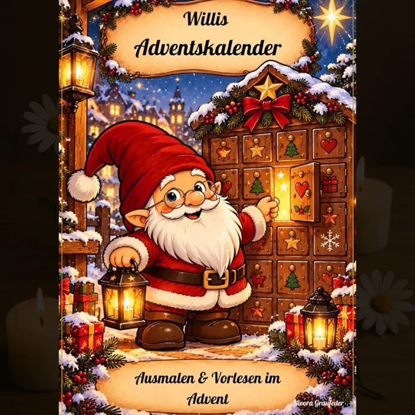

Kinderbücher & Geschichten
Geschichten voller Fantasie, leiser Abenteuer und besonderer Momente – mal für Kinder, mal für alle, die sich ein Stück Erzählliebe bewahrt haben.
Erzählungen zum Vorlesen, Selberlesen und einfach zum Eintauchen, unabhängig vom Alter.
Kinderbücher
Fantasievolle Geschichten, die junge Leser begleiten und zum Staunen, Mitfühlen und Entdecken einladen …

Willis Adventskalender – Ausmalen & Vorlesen im Advent
Ein liebevoll gestalteter Adventskalender mit 24 kleinen Geschichten und passenden Ausmalbildern, der Kinder gemeinsam mit Zwerg Willi durch die Weihnachtszeit begleitet und zum Zuhören, Malen und Träumen einlädt.
Mehr erfahren →
Meine Fantasiewelt zum Ausmalen
Ein fantasievolles Ausmalbuch voller kleiner Geschichten, magischer Orte und bunter Abenteuer, die Kinder zum Träumen, Malen und Weitererzählen einladen.
Mehr erfahren →Geschichten
Kleine Erzählungen über besondere Momente, Gedanken und Begegnungen, die zum Innehalten und Weiterlesen einladen …